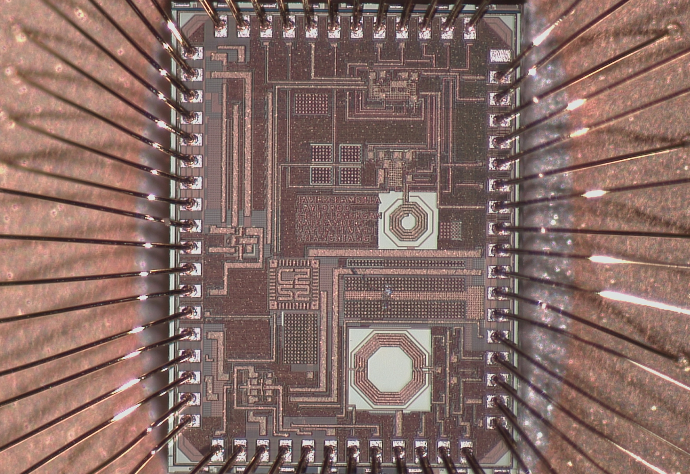

C2S2: 2.4GHz OOK Power Amplifier on TSMC180
Project Description
I am currently working on the design of a low power 2.4GHz Power Amplifier for C2S2's RFIC subteam. The PA is a differential class F topology, targetting a 40% power added efficiency (PAE). This PA will be on a complete 2.4GHz transciever that the team is working on to tapeout in April 2026. The current status is that the schematic and tuning are complete, and layout is about to begin as of January 2026. More documentation to come soon, learn more about C2S2 here: c2s2.engineering.cornell.edu